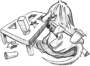
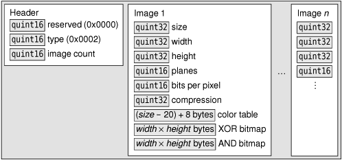

|
|

Dynamic libraries (also called shared libraries or DLLs) are independent modules that are stored in a separate file on disk and can be accessed by multiple applications. Programs usually specify which dynamic libraries they need at link time, in which case the libraries are automatically loaded when the application starts. This approach usually involves adding the library and possibly its include path to the application's .pro file and including the relevant headers in the source files. For example:
LIBS += -ldb_cxx INCLUDEPATH += /usr/local/BerkeleyDB.4.2/include
The alternative is to dynamically load the library when it is required, and then resolve the symbols that we want to use from it. Qt provides the QLibrary class to achieve this in a platform-independent manner. Given the stem of a library's name, QLibrary searches the platform's standard locations for the library, looking for an appropriate file. For example, given the name mimetype, it will look for mimetype.dll on Windows, mimetype.so on Linux, and mimetype.dylib on Mac OS X.
Modern GUI applications can often be extended by the use of plugins. A plugin is a dynamic library that implements a particular interface to provide optional extra functionality. For example, in Chapter 5, we created a plugin to integrate a custom widget with Qt Designer (p. 117).
Qt recognizes its own set of plugin interfaces for various domains, including image formats, database drivers, widget styles, text encodings, and accessibility. This chapter's first section explains how to extend Qt with Qt plugins.
It is also possible to create application-specific plugins for particular Qt applications. Qt makes writing such plugins easy through its plugin framework, which adds crash safety and convenience to QLibrary. In the last two sections of this chapter, we show how to make an application support plugins and how to create a custom plugin for an application.
Qt can be extended with a variety of plugin types, the most common being database drivers, image formats, styles, and text codecs. For each type of plugin, we normally need at least two classes: a plugin wrapper class that implements the generic plugin API functions, and one or more handler classes that each implement the API for a particular type of plugin. The handlers are accessed through the wrapper class. These classes are shown in Figure 21.1.
| Plugin Class | Handler Base Class |
|---|---|
| QAccessibleBridgePlugin | QAccessibleBridge |
| QAccessiblePlugin | QAccessibleInterface |
| QDecorationPlugin[*] | QDecoration[*] |
| QFontEnginePlugin | QAbstractFontEngine |
| QIconEnginePluginV2 | QIconEngineV2 |
| QImageIOPlugin | QImageIOHandler |
| QInputContextPlugin | QInputContext |
| QKbdDriverPlugin[*] | QWSKeyboardHandler[*] |
| QMouseDriverPlugin[*] | QWSMouseHandler[*] |
| QPictureFormatPlugin | N/A |
| QScreenDriverPlugin[*] | QScreen[*] |
| QScriptExtensionPlugin | N/A |
| QSqlDriverPlugin | QSqlDriver |
| QStylePlugin | QStyle |
| QTextCodecPlugin | QTextCodec |
[*] Available only in Qt/Embedded Linux.
To demonstrate how to extend Qt with plugins, we will implement two plugins in this section. The first is a very simple QStyle plugin for the Bronze style we developed in Chapter 19. The second is a plugin that can read monochrome Windows cursor files.
Creating a QStyle plugin is very easy, provided we have already developed the style itself. All we need are three files: a .pro file that is rather different from the ones we have seen before, and small .h and .cpp files to provide a QStylePlugin subclass that acts as a wrapper for the style. We will begin with the .h file:
class BronzeStylePlugin : public QStylePlugin
{
public:
QStringList keys() const;
QStyle *create(const QString &key);
};
All plugins at least provide a keys() function and a create() function. The keys() function returns a list of the objects that the plugin can create. For style plugins, the keys are case-insensitive, so "mystyle" and "MyStyle" are treated the same. The create() function returns an object given a key; the key must be the same as one of those in the list returned by keys().
The .cpp file is almost as small and simple as the .h file.
QStringList BronzeStylePlugin::keys() const
{
return QStringList() << "Bronze";
}
The keys() function returns a list of styles provided by the plugin. Here, we offer only one style, called "Bronze".
QStyle *BronzeStylePlugin::create(const QString &key)
{
if (key.toLower() == "bronze")
return new BronzeStyle;
return 0;
}
If the key is "Bronze" (regardless of case), we create a BronzeStyle object and return it.
At the end of the .cpp file, we must add the following macro to export the style properly:
Q_EXPORT_PLUGIN2(bronzestyleplugin, BronzeStylePlugin)
The first argument to Q_EXPORT_PLUGIN2() is the base name of the target library, excluding any extension, prefix, or version number. By default, qmake uses the name of the current directory as the base name; this can be overriden using the TARGET entry in the .pro file. The second argument to Q_EXPORT_PLUGIN2() is the plugin's class name.
The .pro file is different for plugins than for applications, so we will finish by looking at the Bronze style's .pro file:
TEMPLATE = lib
CONFIG += plugin
HEADERS = ../bronze/bronzestyle.h \
bronzestyleplugin.h
SOURCES = ../bronze/bronzestyle.cpp \
bronzestyleplugin.cpp
RESOURCES = ../bronze/bronze.qrc
DESTDIR = $$[QT_INSTALL_PLUGINS]/styles
By default, .pro files use the app template, but here we must specify the lib template because a plugin is a library, not a stand-alone application. The CONFIG line is used to tell Qt that the library is not just a plain library, but a plugin library. The DESTDIR specifies the directory where the plugin should go. All Qt plugins must go in the appropriate plugins subdirectory where Qt was installed; this path is built into qmake and available from the $$[QT_INSTALL_PLUGINS] variable. Since our plugin provides a new style, we put it in Qt's plugins/styles directory. The list of directory names and plugin types is available at http://doc.trolltech.com/4.3/plugins-howto.html.
Plugins built for Qt in release mode and debug mode are different, so if both versions of Qt are installed, it is wise to specify which one to use in the .pro file—for example, by adding the line
CONFIG += release
Once the Bronze style plugin is built, it is ready for use. Applications can use the style by specifying it in code. For example:
QApplication::setStyle("Bronze");
We can also use the style without changing the application's source code at all, simply by running the application with the -style option. For example:
./spreadsheet -style bronze
When Qt Designer is run, it automatically looks for plugins. If it finds a style plugin, it will offer the option to preview using the style in its Form|Preview in submenu.
Applications that use Qt plugins must be deployed with the plugins they are intended to use. Qt plugins must be placed in specific subdirectories (e.g., plugins/styles for custom styles). Qt applications search for plugins in the plugins directory in the directory where the application's executable resides. If we want to deploy Qt plugins in a different directory, the plugins search path can be augmented by calling QCoreApplication::addLibraryPath() at startup or by setting the QT_PLUGIN_PATH environment variable before launching the application.
Now that we have seen a very simple plugin, we will tackle one that is a bit more challenging: an image format plugin for Windows cursor (.cur) files. (The format is shown in Figure 21.2.) Windows cursor files can hold several images of the same cursor at different sizes. Once the cursor plugin is built and installed, Qt will be able to read .cur files and access individual cursors (e.g., through QImage, QImageReader, or QMovie), and will be able to write the cursors out in any of Qt's other image file formats, such as BMP, JPEG, and PNG.

New image format plugin wrappers must subclass QImageIOPlugin and reimplement a few virtual functions:
class CursorPlugin : public QImageIOPlugin
{
public:
QStringList keys() const;
Capabilities capabilities(QIODevice *device,
const QByteArray &format) const;
QImageIOHandler *create(QIODevice *device,
const QByteArray &format) const;
};
The keys() function returns a list of the image formats the plugin supports. The format parameter of the capabilities() and create() functions can be assumed to have a value from that list.
QStringList CursorPlugin::keys() const
{
return QStringList() << "cur";
}
Our plugin supports only one image format, so it returns a list with just one name. Ideally, the name should be the file extension used by the format. When dealing with formats with several extensions (such as .jpg and .jpeg for JPEG), we can return a list with several entries for the same format, one for each extension.
QImageIOPlugin::Capabilities
CursorPlugin::capabilities(QIODevice *device,
const QByteArray &format) const
{
if (format == "cur")
return CanRead;
if (format.isEmpty()) {
CursorHandler handler;
handler.setDevice(device);
if (handler.canRead())
return CanRead;
}
return 0;
}
The capabilities() function returns what the image handler is capable of doing with the given image format. There are three capabilities (CanRead, CanWrite, and CanReadIncremental), and the return value is a bitwise OR of those that apply.
If the format is "cur", our implementation returns CanRead. If no format is given, we create a cursor handler and check whether it is capable of reading the data from the given device. The canRead() function only peeks at the data, seeing whether it recognizes the file, without changing the file pointer. A capability of 0 means that the file cannot be read or written by this handler.
QImageIOHandler *CursorPlugin::create(QIODevice *device,
const QByteArray &format) const
{
CursorHandler *handler = new CursorHandler;
handler->setDevice(device);
handler->setFormat(format);
return handler;
}
When a cursor file is opened (e.g., by QImageReader), the plugin wrapper's create() function will be called with the device pointer and with "cur" as the format. We create a CursorHandler instance and set it up with the specified device and format. The caller takes ownership of the handler and will delete it when it is no longer required. If multiple files are to be read, a fresh handler will be created for each one.
Q_EXPORT_PLUGIN2(cursorplugin, CursorPlugin)
At the end of the .cpp file, we use the Q_EXPORT_PLUGIN2() macro to ensure that Qt recognizes the plugin. The first parameter is an arbitrary name that we want to give to the plugin. The second parameter is the plugin class name.
Subclassing QImageIOPlugin is straightforward. The real work of the plugin is done in the handler. Image format handlers must subclass QImageIOHandler and reimplement some or all of its public functions. Let's start with the header:
class CursorHandler : public QImageIOHandler
{
public:
CursorHandler();
bool canRead() const;
bool read(QImage *image);
bool jumpToNextImage();
int currentImageNumber() const;
int imageCount() const;
private:
enum State { BeforeHeader, BeforeImage, AfterLastImage, Error };
void readHeaderIfNecessary() const;
QBitArray readBitmap(int width, int height, QDataStream &in) const;
void enterErrorState() const;
mutable State state;
mutable int currentImageNo;
mutable int numImages;
};
The signatures of all the public functions are fixed. We have omitted several functions that we don't need to reimplement for a read-only handler, in particular write(). The member variables are declared with the mutable keyword because they are modified inside const functions.
CursorHandler::CursorHandler()
{
state = BeforeHeader;
currentImageNo = 0;
numImages = 0;
}
When the handler is constructed, we begin by setting its state. We set the current cursor image number to the first cursor, but since we set numImages to 0 it is clear that we have no images yet.
bool CursorHandler::canRead() const
{
if (state == BeforeHeader) {
return device()->peek(4) == QByteArray("\0\0\2\0", 4);
} else {
return state != Error;
}
}
The canRead() function can be called at any time to determine whether the image handler can read more data from the device. If the function is called before we have read any data, while we are still in the BeforeHeader state, we check for the particular signature that identifies Windows cursor files. The QIODevice::peek() call reads the first four bytes without changing the device's file pointer. If canRead() is called later on, we return true unless an error has occurred.
int CursorHandler::currentImageNumber() const
{
return currentImageNo;
}
This trivial function returns the number of the cursor at which the device file pointer is positioned.
Once the handler is constructed, it is possible for the user to call any of its public functions, in any order. This is a potential problem since we must assume that we can only read serially, so we need to read the file header once before doing anything else. We solve the problem by calling the readHeaderIfNecessary() function in those functions that depend on the header having been read.
int CursorHandler::imageCount() const
{
readHeaderIfNecessary();
return numImages;
}
This function returns the number of images in the file. For a valid file where no reading errors have occurred, it will return a count of at least 1.
The next function is quite involved, so we will review it in pieces:
bool CursorHandler::read(QImage *image)
{
readHeaderIfNecessary();
if (state != BeforeImage)
return false;
The read() function reads the data for whichever image begins at the current device pointer position. If the file's header is read successfully, or after an image has been read and the device pointer is at the start of another image, we can read the next image.
quint32 size;
quint32 width;
quint32 height;
quint16 numPlanes;
quint16 bitsPerPixel;
quint32 compression;
QDataStream in(device());
in.setByteOrder(QDataStream::LittleEndian);
in >> size;
if (size != 40) {
enterErrorState();
return false;
}
in >> width >> height >> numPlanes >> bitsPerPixel >> compression;
height /= 2;
if (numPlanes != 1 || bitsPerPixel != 1 || compression != 0) {
enterErrorState();
return false;
}
in.skipRawData((size - 20) + 8);
We create a QDataStream to read the device. We must set the byte order to match that specified by the .cur file format specification. There is no need to set a QDataStream version number since the format of integers and floating-point numbers does not vary between data stream versions. Next, we read in various items of cursor header data, and we skip the irrelevant parts of the header and the 8-byte color table using QDataStream::skipRawData().
We must account for all the format's idiosyncrasies—for example, halving the height because the .cur format gives a height that is twice as high as the actual image's height. The bitsPerPixel and compression values are always 1 and 0 in a monochrome .cur file. If we have any problems, we call enterErrorState() and return false.
QBitArray xorBitmap = readBitmap(width, height, in);
QBitArray andBitmap = readBitmap(width, height, in);
if (in.status() != QDataStream::Ok) {
enterErrorState();
return false;
}
The next items in the file are two bitmaps, one an XOR mask and the other an AND mask. We read these into QBitArrays rather than into QBitmaps. A QBitmap is a class designed to be drawn on and painted on-screen, but what we need here is a plain array of bits.
When we are done with reading the file, we check the QDataStream's status. This works because if a QDataStream enters an error state, it stays in that state and can only return zeros. For example, if reading fails on the first bit array, the attempt to read the second will result in an empty QBitArray.
*image = QImage(width, height, QImage::Format_ARGB32);
for (int i = 0; i < int(height); ++i) {
for (int j = 0; j < int(width); ++j) {
QRgb color;
int bit = (i * width) + j;
if (andBitmap.testBit(bit)) {
if (xorBitmap.testBit(bit)) {
color = 0x7F7F7F7F;
} else {
color = 0x00FFFFFF;
}
} else {
if (xorBitmap.testBit(bit)) {
color = 0xFFFFFFFF;
} else {
color = 0xFF000000;
}
}
image->setPixel(j, i, color);
}
}
We construct a new QImage of the correct size and assign it to *image. Then we iterate over every pixel in the XOR and AND bit arrays and convert them into 32-bit ARGB color specifications. The AND and XOR bit arrays are used as shown in the following table to obtain the color of each cursor pixel:
| AND | XOR | Result |
|---|---|---|
| 1 | 1 | Inverted background pixel |
| 1 | 0 | Transparent pixel |
| 0 | 1 | White pixel |
| 0 | 0 | Black pixel |
Black, white, and transparent pixels are no problem, but there is no way to obtain an inverted background pixel using an ARGB color specification without knowing the color of the original background pixel. As a substitute, we use a semi-transparent gray color (0x7F7F7F7F).
++currentImageNo;
if (currentImageNo == numImages)
state = AfterLastImage;
return true;
}
Once we have finished reading the image, we update the current image number and update the state if we have reached the last image. At that point, the device will be positioned at the next image or at the end of the file.
bool CursorHandler::jumpToNextImage()
{
QImage image;
return read(&image);
}
The jumpToNextImage() function is used to skip an image. For simplicity, we simply call read() and ignore the resulting QImage. A more efficient implementation would use the information stored in the .cur file header to skip directly to the appropriate offset in the file.
void CursorHandler::readHeaderIfNecessary() const
{
if (state != BeforeHeader)
return;
quint16 reserved;
quint16 type;
quint16 count;
QDataStream in(device());
in.setByteOrder(QDataStream::LittleEndian);
in >> reserved >> type >> count;
in.skipRawData(16 * count);
if (in.status() != QDataStream::Ok || reserved != 0
|| type != 2 || count == 0) {
enterErrorState();
return;
}
state = BeforeImage;
currentImageNo = 0;
numImages = int(count);
}
The readHeaderIfNecessary() private function is called from imageCount() and read(). If the file's header has already been read, the state is not BeforeHeader and we return immediately. Otherwise, we open a data stream on the device, read in some generic data (including the number of cursors in the file), and set the state to BeforeImage. At the end, the device's file pointer is positioned before the first image.
void CursorHandler::enterErrorState() const
{
state = Error;
currentImageNo = 0;
numImages = 0;
}
If an error occurs, we assume that there are no valid images and set the state to Error. Once in the Error state, the handler's state cannot change.
QBitArray CursorHandler::readBitmap(int width, int height,
QDataStream &in) const
{
QBitArray bitmap(width * height);
quint32 word = 0;
quint8 byte;
for (int i = 0; i < height; ++i) {
for (int j = 0; j < width; ++j) {
if ((j % 32) == 0) {
word = 0;
for (int k = 0; k < 4; ++k) {
in >> byte;
word = (word << 8) | byte;
}
}
bitmap.setBit(((height - i - 1) * width) + j,
word & 0x80000000);
word <<= 1;
}
}
return bitmap;
}
The readBitmap() function is used to read a cursor's AND and XOR masks. These masks have two unusual features. First, they store the rows from bottom to top, instead of the more common top-to-bottom approach. Second, the endianness of the data appears to be reversed from that used everywhere else in .cur files. In view of this, we must invert the y-coordinate in the setBit() call, and we read in the mask values one byte at a time, bit-shifting and masking to extract their correct values.
To build the plugin, we must use a .pro file that is very similar to the one we used for the Bronze style plugin shown earlier (p. 493):
TEMPLATE = lib
CONFIG += plugin
HEADERS = cursorhandler.h \
cursorplugin.h
SOURCES = cursorhandler.cpp \
cursorplugin.cpp
DESTDIR = $$[QT_INSTALL_PLUGINS]/imageformats
This completes the Windows cursor plugin. Plugins for other image formats would follow the same pattern, although some might implement more of the QImageIOHandler API, in particular the functions used for writing images. Plugins of other kinds follow the pattern of having a plugin wrapper that exports one or several handlers that provide the underlying functionality.
|
|
| Converted from CHM to HTML with chm2web Pro 2.85 (unicode) |